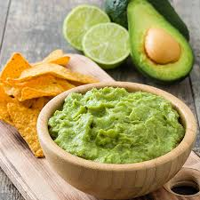

description
Bienvenido a Comidas mexichangas, un espacio dedicado a explorar y celebrar los vibrantes sabores de la gastronomía mexicana. Desde los tacos al pastor recién hechos hasta el mole poblano lleno de historia, te invitamos a un viaje culinario por los rincones más auténticos de México. Aquí descubrirás recetas tradicionales que han sido transmitidas de generación en generación, junto con reinterpretaciones modernas que mantienen viva nuestra rica herencia cultural. Ya sea que seas un cocinero experimentado o un amante de la comida buscando inspiración, encontrarás aquí algo para despertar tu apetito.
Acompañaremos cada receta con imágenes vibrantes y videos que muestran el proceso paso a paso, para que puedas preparar platillos dignos de una auténtica taquería mexicana en tu propia cocina.
¡Prepárate para explorar los sabores de México y llevar un pedazo de nuestra cultura a tu mesa!
Platillos destacados
- Tacos al pastor
La receta más clásica y amada de la comida callejera mexicana.
Figura 1. Tacos al pastor
- Cuacamole
Fresco, fácil y siempre un favorito para acompañar con totopos
Figura 2. Guacamole
- Enchiladas verdes
Tortillas rellenas y bañadas en una deliciosa salsa de tomatillo

Figura 3. Enchiladas verdes
- Chiles en nogada
Un platillo histórico que celebra los colores de la bandera de México.

Figura 4. Chiles en nogada